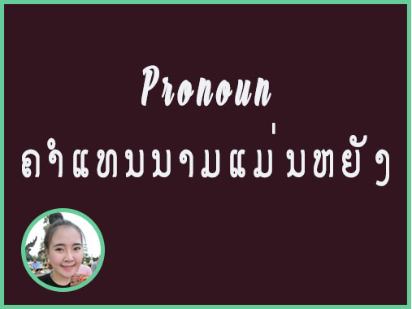

Pronoun :
Pronoun ແມ່ນຄຳແທນນາມ ຫລື ຄຳທີ່ໃຊ້ແທນຄຳນາມ ທີ່ໃຊ້ແທນຊື່ເອີ້ນຂອງ ຄົນ ສັດ ແລະ ວັດຖຸສິ່ງຂອງ
Pronoun (ຄໍາແທນນາມ) ແບ່ງອອກເປັນ 5 ປະເພດ แบ่งออกเป็น 5
ຮູບແບບຂອງຄຳແທນນາມ Pronoun ໃນພາສາອັງກິດ
I me my mine myself
You you your yours yourself
We us our ours ourselves
They them their theirs themselves
He him his his himself
She her her hers herself
It it its (its) itself
ຂໍ້ຄວນຮູ້ข้อควรรู้
ການໃຊ້ Pronoun ຄຳວ່າ you ເປັນໄດ້ທັງຈຳນວນໜ້ອຍ ແລະ ຈຳນວນຫຼາຍ(ເຈົ້າ ຫລື ພວກເຈົ້າ 1 )
-Personal Pronouns
Personal Pronouns ໝາຍເຖິງ ຄຳແທນນາມທີ່ໃຊ້ແທນນາມບຸລຸດທີ 1 (ຜູ້ເວົ້າ) ນາມບຸລຸດທີ 2 (ຜູ້ຟັງ) ນາມບຸລຸດທີ 3 (ນາມທີ່ຖືກກ່າວເຖິງ ອາດເປັນຄົນ ສັດ ຫລື ວັດຖຸສິ່ງຂອງ)
-Personal Pronouns ໄດ້ແບ່ງເປັນ 2 ຮູບແບບ ຄື
1. Personal Pronouns ຮູບແບບປະທານ ໝາຍເຖິງຄຳແທນນາມທີ່ໃຊ້ເປັນປະທານ ເຊັ່ນ I, You, We, They, He, She, It ເປັນຕົ້ນ
ຕົວຢ່າງປະໂຫຍກພາສາອັງກິດ
We are students.
= ພວກເຮົາເປັນນັກຮຽນพวกเราเป็นนักเรียน
He is a teacher.
= ລາວ (ຜູ້ຊາຍ) ເປັນຄູ
2. Personal Pronouns ຮູບແບບຕົວປະກອບ ໝາຍເຖິງ ຄຳແທນນາມມີ່ໃຊ້ເປັນຕົວປະກອບຂອງປະໂຫຍກ
ຕົວຢ່າງປະໂຫຍກພາສາອັງກິດ
She asks me to teach her homework.
= ລາວຂໍໃຫ້ຂ້ອຍ ສອນວຽກບ້ານໃຫ້
She asks him to teach her homework.
= ລາວຂໍໃຫ້ເຂົາສອນວຽກບ້ານໃຫ້
ການໃຊ້ He , She , It
1. ເພດຊາຍ ແລະ ບໍ່ບົ່ງເພດ ໃຊ້ He
2. He, She ນອກຈາກໃຊ້ແທນຄົນແລ້ວ ຍັງໃຊ້ແທນສັດລຽ້ງໄດ້
3. She ອາດໃຊ້ແທນສິ່ງບໍ່ມີຊີວິດໄດ້ ເມື່ອກ່າວເຖິງຄຸນສົມບັດ ຫຼື ຄວາມຮູ້ສືກ ເຊັ່ນ ເຮືອ ລົດໄຟ ຫຼື ຍົນ .
4. She ໃຊ້ແທນປະເທດໃນແງ່ຂອງໜວ່ຍໜຶ່ງ ທາງການເມືອງ ແລະວັດທະນະທຳ
5. It ໃຊ້ກັບສັດ ແລະເດັກນ້ອຍ ທີ່ບ່ທັນຮູ້ເພດ ຫຼື ບໍ່ຄຳນຶງເຖິງເພດ
-Possessive Pronouns ໝາຍເຖິງຄຳແທນນາມທີ່ສະແດງຄວາມເປັນເຈົ້າຂອງ ເຊັ່ນ his , hers , theirs , mine , ours , yours.